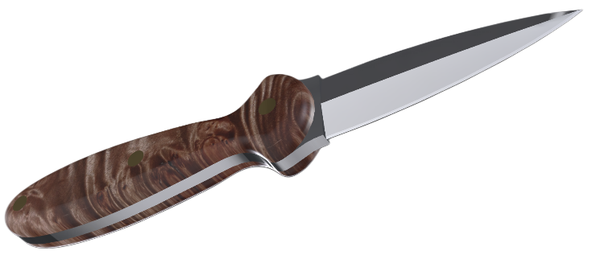

Configure your build visually.
Materials, finishes, and pricing update live as you explore every angle.

Purpose in every line.
A Carson Woodall knife is functional art — not ornamental, not disposable. It’s built for real work, for people who understand the difference between sharp and well-made. That philosophy runs through every design, every grind, every edge. Form follows function, and function is guided by instinct.
Each model begins as a study in balance — proportion, geometry, and purpose. From there, precision machining brings consistency to form, while hand finishing ensures each knife still carries the maker’s eye. Every surface is considered, every tolerance deliberate. It’s modern craftsmanship with the soul of traditional making — technology serving intention, not replacing it.
Design starts in quiet — where nothing distracts from the details. Every line, angle, and transition exists for a reason. Edges are shaped to work; handles are sculpted to fit; finishes are chosen for endurance, not flash. What remains is a knife stripped of excess — honest in material and deliberate in execution.
Good design doesn’t shout. It endures. The goal isn’t mass production — it’s consistency of purpose. Each blade is built to function, to be used, and to last. Refinement is the pursuit, not decoration.
The CW scorpion isn’t just a logo — it’s a reminder. A symbol of resilience, precision, and the environment that shaped the brand. It marks every blade as part of something built with intention — a small, enduring piece of the desert itself.
Carson Woodall Knives — Born in the desert. Built to work.